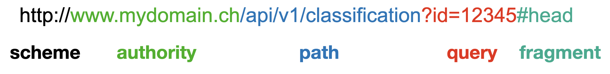

HTTP & REST
HTTP
Hypertext transfer protocol (HTTP) defines how data is transferred between servers and clients. Core elements are:
- URI & Paths
- Methods
- Header
- Body
- Responses
URL
A URL (Uniform Resource Locator) identifies a resource, where to find it in a network and how to access it.

| Component | Example | Description |
|---|---|---|
| scheme | http |
Protocol to use (http, https, ftp, mailto, …) |
| authority | www.mydomain.ch |
Host plus optional port (:8080) and user info. Default ports: 80 (http), 443 (https) |
| path | /api/v1/classification |
Hierarchical location of the resource on the server |
| query | ?id=12345 |
Key-value pairs, e.g. to filter or parameterize the resource |
| fragment | #head |
Section inside the returned document — evaluated by the client, never sent to the server |
query parameters
- Query parameters — filter, sort or paginate a collection
GET /api/v1/users?role=admin&active=true| Rule | Example |
|---|---|
Query string starts with ? |
/search?q=http |
Key and value are joined with =, pairs with & |
?q=http&lang=en |
| Multiple values: repeat the key (or comma-join) | ?tag=a&tag=b or ?tag=a,b |
| Query params show up in browser history, bookmarks & server logs — never put secrets (API keys, tokens) there |
URL encoding
URLs only allow a limited character set. Everything else — spaces, non-ASCII characters and characters with a reserved meaning — must be percent-encoded (% followed by the hex byte).
- Encode values with a tool, not by hand
curl --get --data-urlencode "q=a & b" https://api.example.com/searchMethods
| Method | Purpose | request body | response body | safe | idempotent | cacheable |
|---|---|---|---|---|---|---|
| GET | Read a resource | ✗ | ✓ | ✓ | ✓ | ✓ |
| POST | Create a resource, trigger an action | ✓ | ✓ | ✗ | ✗ | (✓) |
| PUT | Create or fully replace a resource at a known URI | ✓ | (✓) | ✗ | ✓ | ✗ |
| DELETE | Remove a resource | ✗ | (✓) | ✗ | ✓ | ✗ |
| PATCH | Partially modify a resource | ✓ | (✓) | ✗ | ✗ | ✗ |
| HEAD | Like GET, but response has headers only, no body | ✗ | headers only | ✓ | ✓ | ✓ |
| OPTIONS | Ask which methods/headers are allowed (CORS preflight) | ✗ | ✓ | ✓ | ✓ | ✗ |
- Safe — The client does not request a change to server state.
- Idempotent — Repeating the same request has the same outcome on the server; responses may differ (e.g. first response: 204, second: 404).
- Cacheable — Responses may be stored and reused by a cache when the method, status and cache headers allow it.
Header
- Content types (JSON, URLENCODING, XML)
- Accept
- authorization
- Cache-Control/ETag
- Cookie/set-Cookie
- Location
- Host
Body
- data vs form types
### Responses
A response contains a status code, headers, and (usually) a body. The Content-Type header describes the response body; Accept in the request can be used to declare the desired response format with relative preference (e.g. Accept: application/json;q=1.0, text/csv;q=0.8 = “I prefer json, but can also read csv.”)
2xx — Success
| Code | Name | When |
|---|---|---|
| 200 | OK | GET succeeded and the response body contains the requested resource; also used for successful PUT or PATCH when returning the updated resource |
| 201 | Created | A POST or PUT created a resource; its URI is commonly returned in the Location header |
| 204 | No Content | Request succeeded, but there is no response body (often after DELETE) |
3xx — Redirection
| Code | Name | When |
|---|---|---|
| 301 | Moved Permanently | Resource has a permanent new URI; Location points to it |
| 302 | Found | Resource is temporarily available at another URI; Location points to it |
| 304 | Not Modified | Cached representation is still valid after a conditional request; no response body, use the cached copy |
4xx — Client error
| Code | Name | When |
|---|---|---|
| 400 | Bad Request | Request is malformed or cannot be parsed |
| 401 | Unauthorized | Authentication is missing or invalid — the server cannot verify who you are; authenticate and retry |
| 403 | Forbidden | Authentication succeeded, but you lack permission — retrying with the same credentials will not help |
| 404 | Not Found | Requested resource does not exist |
| 405 | Method Not Allowed | Method is not supported for this resource; response should include an Allow header |
| 409 | Conflict | Request conflicts with the current resource state, such as a duplicate or version conflict |
| 422 | Unprocessable Content | Request is syntactically valid, but its values fail validation |
| 429 | Too Many Requests | Rate limit exceeded; Retry-After may indicate when to retry |
5xx — Server error
| Code | Name | When |
|---|---|---|
| 500 | Internal Server Error | Unexpected server-side failure |
| 502 | Bad Gateway | Gateway or proxy received an invalid response from an upstream server |
| 503 | Service Unavailable | Server is overloaded or under maintenance; Retry-After may indicate when to retry |
Request / Response Example
Create a user with a JSON request:
POST /api/v1/users HTTP/1.1
Host: api.example.com
Authorization: Bearer <access-token>
Accept: application/json
Content-Type: application/json
{
"name": "Ada Lovelace",
"email": "ada@example.com"
}- 1
-
POSTasks the server to create a resource; the request target is/api/v1/usersandHTTP/1.1identifies the protocol version. - 2
-
Hostidentifies the server being addressed (required in HTTP/1.1). - 3
-
Authorizationsends a bearer token to authenticate the request. Use a real secret only over HTTPS. - 4
-
Acceptsays the client wants a JSON response. - 5
-
Content-Typesays the request body is JSON. - 6
- The JSON body contains the fields used to create the user.
The server can respond with the created resource and its URI:
HTTP/1.1 201 Created
Location: /api/v1/users/42
Content-Type: application/json
Cache-Control: no-store
{
"id": 42,
"name": "Ada Lovelace",
"email": "ada@example.com"
}- 1
-
201 Createdindicates that the request successfully created a resource. - 2
-
Locationgives the URI of the newly created user. - 3
-
Content-Typeidentifies the format of the response body. - 4
-
Cache-Control: no-storetells caches not to store this response. - 5
-
The response body returns the created user, including its assigned
id.
Debugging
Work through the layers: local process → DNS → TCP connection → TLS → HTTP → application. Start with the exact failing URL, method, headers and body; compare with server logs using the timestamp or request ID.
Local processes and ports
- List processes with open network sockets, including listening sockets and connections (macOS / Linux with
lsofinstalled)
lsof -i -P -n
lsof -nP -iTCP -sTCP:LISTEN
lsof -nP -iTCP:8000 -sTCP:LISTEN
ss -lntup- 1
-
List open network sockets.
COMMAND/PIDidentify the process;NAMEshows addresses and ports.-iselects network sockets,-Pkeeps port numbers numeric and-nkeeps IP addresses numeric. Omit-Pfor known service names (e.g.https), but these are port-label mappings, not proof of which application is running. - 2
-
Show TCP servers listening for connections:
-iTCPselects TCP sockets and-sTCP:LISTENfilters for listening sockets. - 3
-
Find the process listening on TCP port
8000;-iTCP:8000restricts the selection to that port. - 4
-
Linux alternative: show listening (
-l) TCP (-t) and UDP (-u) sockets with numeric addresses/ports (-n) and process information (-p). UDP sockets do not have a TCP-styleLISTENstate.
Elevated privileges may be needed to see other users’ processes.
- Address already in use — another process owns the port; identify it before stopping anything, or choose another port.
- Connection refused — check that the server is running and listening on the expected port and interface.
- A server bound to
127.0.0.1is reachable only locally. Containers also need a published port; a service inside a container usually needs to bind to0.0.0.0(all IPv4 interfaces). Do not expose a development server publicly by accident by binding it to all host interfaces (0.0.0.0or::), publishing a container port on all host interfaces (e.g.docker run -p 8000:8000 …).
Inspect a response with curl
| Command | When to use it |
|---|---|
curl 'https://api.example.com/health' |
GET request; prints the response body |
curl -i 'https://api.example.com/health' |
Include response status and headers with the body |
curl -I 'https://api.example.com/health' |
Send HEAD, not GET; some servers handle it differently or reject it |
curl -v 'https://api.example.com/health' |
Inspect connection details, TLS negotiation, request headers (>) and response headers (<); diagnostics go to stderr |
curl -L --max-redirs 5 'https://api.example.com/health' |
Follow redirects. If the destination is unexpected, run curl without -L first and inspect Location in the header to see where the original URL redirects to. |
curl --compressed 'https://api.example.com/users' |
Request a supported compressed response (E.g. gzip) and decompress it automatically |
curl -sS -o response.json 'https://api.example.com/users' |
Stores errors in a JSON-file, hides the progress meter. |
curl --trace-ascii trace.txt --trace-time |
Get a .txt-file with detailed diagnostic trace (connection events, sent/received headers and data + timestamps). |
redact before sharing and do not commit them.
By default, curl can exit successfully even for HTTP 404 or 500: the HTTP transfer itself succeeded. --fail-with-body makes HTTP errors return a nonzero exit code (usually 22) while keeping the error body.
Example response
Illustrative, shortened output from curl -v (exact wording depends on the curl version and TLS backend). The hostname and IP are placeholders; this example negotiates HTTP/1.1.
user ~ % curl -v 'https://api.example.com/get_items'
* Host api.example.com:443 was resolved.
* IPv4: 192.0.2.10
* Trying 192.0.2.10:443...
* Connected to api.example.com (192.0.2.10) port 443
* SSL connection using TLSv1.3 / TLS_AES_256_GCM_SHA384
* subjectAltName: host "api.example.com" matched cert's "api.example.com"
* SSL certificate verify ok.
* ALPN: server accepted http/1.1
> GET /get_items HTTP/1.1
> Host: api.example.com
> User-Agent: curl/8.7.1
> Accept: */*
>
< HTTP/1.1 200 OK
< Content-Type: application/json
< Cache-Control: no-store
<
{"items":[]}
* Connection #0 to host api.example.com left intact- 1
- DNS succeeded: the hostname resolved to an IP address. If resolution fails, check the hostname, DNS configuration and VPN before investigating HTTP.
- 2
-
TCP succeeded: curl established a connection to port
443at that IP. This proves connectivity to a listener, not that the application is healthy. A refusal or timeout here points to the port, listener, routing or firewall. - 3
- TLS succeeded: the connection is encrypted using TLS 1.3 and the displayed cipher suite. A failure before this point can indicate the wrong protocol/port or a TLS configuration problem.
- 4
-
Certificate checks passed: the certificate matches the requested hostname and curl trusts its certificate chain. For a verification error, check the hostname, certificate dates and CA chain rather than bypassing verification with
-k. - 5
- HTTP protocol selected: ALPN (negotiation for http-protocol) negotiated HTTP/1.1. Other servers may select HTTP/2, whose verbose output looks different.
- 6
-
Outgoing request (
>): curl sendsGET /get_itemsto the indicated host. Check the method, path and headers against what the API expects.Accept: */*allows any response media type; no authorization header is sent in this example. The empty>line ends the request headers. - 7
-
Incoming response (
<):200 OKmeans the server reports a successful HTTP request. A3xxwithLocationindicates a redirect;-vshows it but does not follow it without-L. For4xx/5xx, inspect the response body for details. - 8
-
Response headers: the body is declared as JSON, and
Cache-Control: no-storetells caches not to store the response. The empty<line separates headers from the body. - 9
-
Response body: the API returned an empty
itemsarray. Transport and HTTP succeeded. - 10
-
Connection kept open: curl left the connection available for reuse during this process; this is normal. Lines starting with
*are curl’s diagnostic messages.
Reproduce the request
- Query parameters
curl -i --get 'https://api.example.com/users' \
--data-urlencode 'name=Ada Lovelace' \
--data-urlencode 'role=admin'- 1
-
use
--getso data goes into the URL, not a POST body
- JSON — set the request content type and expected response type explicitly
# --data implies POST; no -X POST is needed
curl -i 'https://api.example.com/users' \
-H 'Content-Type: application/json' \
-H 'Accept: application/json' \
--data '{"name":"Ada Lovelace","email":"ada@example.com"}'
# Send a JSON file without modifying its contents
curl -i -X PUT 'https://api.example.com/users/42' \
-H 'Content-Type: application/json' \
--data-binary @user.json-X changes the method name; it does not configure body handling. Use -I for HEAD. Only run modifying requests against resources you intend to change.
- URL-encoded forms versus multipart file uploads
# application/x-www-form-urlencoded; --data-urlencode implies POST
curl -i 'https://api.example.com/form' \
--data-urlencode 'name=Ada Lovelace' \
--data-urlencode 'message=a & b'
# multipart/form-data; curl generates the Content-Type and boundary
curl -i 'https://api.example.com/upload' \
-F 'file=@report.pdf' \
-F 'description=Monthly report'- Authentication and cookies
# TOKEN must already contain your access token; do not paste secrets into history
curl -i -H "Authorization: Bearer $TOKEN" 'https://api.example.com/me'
# Basic authentication: curl prompts for the password
curl -i --user alice 'https://api.example.com/me'
# Save cookies from one request, then reuse them
curl -i -c cookies.txt 'https://api.example.com/session'
curl -i -b cookies.txt 'https://api.example.com/me'- Use credentials only over HTTPS and protect cookie files.
- Environment variables avoid literal tokens in shell history, but expanded arguments may still be visible to local process inspection.
- Do not use
--location-trustedto work around redirect authentication issues: it can forward credentials to other hosts.
Avoid combining -X with -L unless you understand how it affects redirected requests.
DNS, connectivity and TLS
# DNS: inspect IPv4 and IPv6 records
dig +short api.example.com A
dig +short api.example.com AAAA
# TCP only: can a connection to this host and port be established?
nc -vz -w 5 api.example.com 443
# Compare IPv4 versus IPv6 connectivity
curl -4 -v 'https://api.example.com/health'
curl -6 -v 'https://api.example.com/health'
# Test a specific server IP while preserving hostname, Host header and TLS SNI
curl -v --resolve 'api.example.com:443:192.0.2.10' \
'https://api.example.com/health'
# Inspect the TLS handshake and certificate chain; send the expected SNI hostname
openssl s_client -connect api.example.com:443 \
-servername api.example.com -showcerts </dev/null
# Trust an internal CA explicitly instead of disabling certificate verification
curl --cacert company-ca.pem 'https://api.example.com/health'- 1
-
--resolvebypasses DNS for that host/port without breaking HTTPS hostname checks.
- Proxy or protocol mismatch
# Ignore configured proxies for a direct-connection comparison, if permitted
curl -v --noproxy '*' 'https://api.example.com/health'
# Compare HTTP/1.1 and HTTP/2 (HTTP/2 requires curl support)
curl -v --http1.1 'https://api.example.com/health'
curl -v --http2 'https://api.example.com/health'Check environment variables http_proxy, https_proxy, ALL_PROXY and NO_PROXY if requests take an unexpected route. --http2 can fall back to HTTP/1.1; inspect the negotiated protocol in verbose output.
Timeouts, latency and retries
curl -sS -o /dev/null \
--connect-timeout 5 --max-time 20 \ # <1>
-w 'HTTP %{http_code}\nIP %{remote_ip}\nDNS %{time_namelookup}s\nConnect %{time_connect}s\nTLS %{time_appconnect}s\nFirst byte %{time_starttransfer}s\nTotal %{time_total}s\n' \
'https://api.example.com/health'
# Bounded retries for a read-only request after transient failures
curl --fail-with-body --connect-timeout 5 --max-time 20 \
--retry 3 --retry-max-time 60 \
'https://api.example.com/health'- 2
-
--retryhandles selected transient failures, not every error, and honorsRetry-Afterwhere applicable.--retry-max-timelimits when another retry may start, not a hard deadline for the entire operation. Do not blindly retry writes: a timeout does not mean the server did not apply the change. Use API-supported idempotency keys or verify the result first.
Browser-only failures (CORS)
If curl succeeds but the browser fails, inspect Developer Tools → Network / Console. Use Copy as cURL to reproduce the actual browser request (remove secrets before sharing). Check cookies, CSRF protection, mixed HTTP/HTTPS content and CORS.
Common errors and likely causes
Curl exit codes describe transfer failures; HTTP status codes describe responses from a server or intermediary. HTTP 000 in curl’s output is not a real status code: no HTTP response status was received.
| Symptom | Common causes / next check |
|---|---|
curl 5 / 6: could not resolve proxy / host |
Typo, wrong DNS, missing VPN or incorrect proxy hostname; check DNS and proxy settings |
curl 7: failed to connect |
Wrong host/port, no listener, rejected connection or routing/firewall issue; check lsof, nc, container port publishing |
curl 28: timeout |
Slow DNS, dropped packets, firewall, unreachable upstream or slow application; use verbose output and timings to locate the phase |
curl 35: TLS connection error |
TLS to a plain HTTP port, unsupported TLS version/cipher, proxy interference or missing client certificate |
curl 60: certificate verification failed |
Expired certificate, hostname mismatch, untrusted CA, missing intermediate certificate or wrong system clock; fix trust/chain/hostname. -k / --insecure disables verification and is not a production fix |
curl 52 / 56: empty reply / receive failure |
Peer closed or reset the connection, application crashed, proxy failed or wrong protocol/port; inspect server and proxy logs |
Redirect loop / curl 47 |
Conflicting HTTP↔︎HTTPS redirects, wrong reverse-proxy scheme headers or login/cookie loop; inspect each Location |
400 / 422 |
Malformed JSON, invalid fields, wrong query encoding or schema validation; inspect the error body |
401 / 403 |
Missing/expired token, wrong token audience/scope, insufficient permissions, CSRF or gateway policy; inspect auth headers and logs |
404 / 405 |
Wrong base URL, path, API version or method; check routing, trailing slash and Allow |
406 / 415 |
Unsupported response format (Accept) / request media type (Content-Type); ensure headers match the actual body |
409 / 412 |
State/version conflict or failed precondition (e.g. stale If-Match ETag); fetch current state before retrying |
429 |
Rate limit; honor Retry-After, reduce concurrency and use backoff |
500 |
Application failure; correlate the request ID with server logs |
502 / 503 / 504 |
Upstream failure, unavailable service or gateway timeout; check proxy logs, backend health and timeout settings |
200 but HTML instead of JSON |
Login redirect, wrong endpoint or proxy error page; inspect redirect history and Content-Type before parsing JSON |
| Old or unexpected response | Browser/CDN/proxy cache or wrong environment; inspect Age, Cache-Control, ETag and the resolved IP. Try -H 'Cache-Control: no-cache' to request cache revalidation |
REST
Representational State Transfer is an architectural style for resource-oriented systems. HTTP APIs expose resources via URIs and exchange representations (e.g. JSON); JSON over HTTP alone is not REST.
Architectural constraints
- Client–server: separate user interface from data storage and processing.
- Stateless: each request contains all context needed to process it; no server-side client session is required. Resource state can still be stored.
- Cacheable: responses indicate whether/how they can be reused (
Cache-Control, validators such asETag). - Uniform interface: identify resources, manipulate them through representations, use self-descriptive messages and hypermedia links (HATEOAS).
- Layered system: clients need not know whether they contact the origin server, a proxy or a gateway.
- Code on demand (optional): servers may send executable client code.
CRUD → HTTP methods
| Operation | Request | Typical success |
|---|---|---|
| Create | POST /users |
201 + Location: /users/42 |
| Read | GET /users or GET /users/42 |
200 + collection/resource |
| Update | PUT /users/42 (replace), PATCH /users/42 (partial) |
200 + resource or 204 |
| Delete | DELETE /users/42 |
204 |
PUT can also create at a known URI (201); POST is not limited to CRUD creation.
Resource & query conventions
These are API design conventions, not REST requirements; document and apply them consistently.
| Concern | Convention / example |
|---|---|
| Resource names | Plural nouns, lowercase, hyphens: /users, /order-items; not /getUsers |
| Identity / relationships | /users/42, /users/42/orders; avoid deep nesting |
| Filtering | ?role=admin&active=true; document operators and multi-value semantics |
| Sorting | ?sort=-created_at,id (descending date, ascending ID); use a unique tie-breaker |
| Pagination | ?limit=20&offset=40 or ?limit=20&cursor=opaque-token; cap page size and return a next-page link/cursor |
Offset pagination is simple but can skip/duplicate items as data changes; cursors work better for large/changing collections with stable ordering.
Versioning & HATEOAS
- Versioning: reserve new versions for breaking changes; common choices are URI versions (
/api/v1/users) or media types (Accept: application/vnd.example.v1+json). Document deprecation and migration timelines. - HATEOAS (Hypermedia as the Engine of Application State): responses provide links/actions with relation names (e.g.
self,next,cancel), so clients discover valid next steps instead of constructing every URI. Link format depends on the chosen media type.
Error responses
Use appropriate HTTP status codes and a consistent machine-readable body, e.g. Problem Details (RFC 9457) with Content-Type: application/problem+json:
{
"type": "https://api.example.com/problems/validation",
"title": "Validation failed",
"status": 422,
"detail": "The email address is invalid.",
"instance": "/requests/abc123",
"errors": [{"field": "email", "code": "invalid_format"}]
}- 1
-
typeidentifies the problem class; use stable types for client logic. - 2
-
Keep
statusaligned with the HTTP status code. - 3
- Never expose secrets or stack traces in error details.
- 4
-
instanceidentifies this occurrence. - 5
-
errorsis a custom extension; use stable codes for client logic.